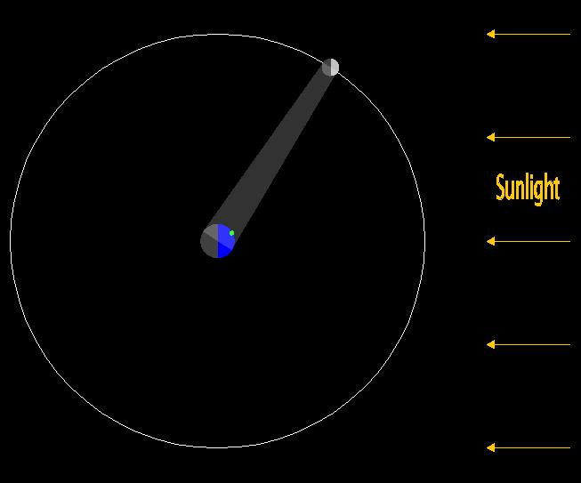
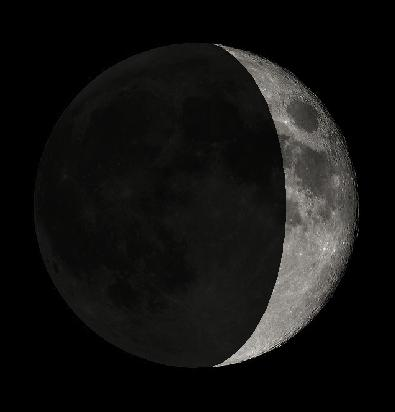

月相
概述
這個程式模擬為何太陽、地球、月亮的相對位置會改變月亮的模樣。圖片的左邊展示了地球(正中央)和月球，以及月球的圓形運行軌道，太陽光來自圖片的右方，使得地球和月亮的右邊是亮的，而左邊是暗的。圖中的一道光束顯示出了由地球看月球能見到亮的部分，以及由月球看地球能見到亮的部分。太陽至地球的連線及月球至地球連線的夾角可以被調整，綠色的點表示地表上的觀察者，觀察者所在的時間也可以調整，這樣一來能讓使用者更有效率地觀察不同位置的觀察者。
圖片的右邊顯示的是由地球所見到的月球，月球的位置對應左邊圖片的位置，我們能觀察到月球暗面亮度的變化是根據左邊圖片月球的所在軌道位置，這是因為月球會接收到由地球反射過去的光線，即為所謂的地球反照，反照的亮度和月球在軌道中的位置有關係。
動畫元素
- 運行軌道
- 動畫元素選單
- 顯示月亮: 勾選產生月相變動視窗。
- 顯示觀察者: 勾選以顯示觀察者在地球的位置。觀察者所在的時間顯示在視窗的底端，可以被修改。
- 顯示月亮的軌道: 勾選以顯示月亮的軌跡。
- 顯示光束: 勾選以顯示地球能見的月球亮面及月球能見地球的亮面。
- 藍/黑色圓盤: 地球(相較月球的軌道而言比原比例大)。
- 綠點: 顯示觀察者在地球的位置。
- 白/黑圓盤: 月球(也較原比例大)。
- 白色圓形: 月亮繞行地球的運行軌跡。
- 黃色箭頭: 顯示太陽光來自很遙遠由右而左的平行光。
- 白色亮帶(光束): 顯示地球能見的月球亮面及月球能見地球的亮面。
- 月相
- 對照軌道視窗顯示月亮所在軌道位置在地球所見到的亮面部分，以及受到地球反照影響的變化(見上述)。
控制
- 開始/停止按鈕: 開始/停止月球在軌道上運行。
- 角度: 拖移來控制太陽至地球連線及月亮至地球連線的夾角，這樣一來能讓使用者更有效率地觀察不同位置的觀察者。
- 時間: 設置觀察者(綠色的點)在地球上所載的時間時間以小時為單位，0為午夜。
Todd K. Timberlake (ttimberlake@berry.edu)